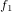
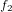
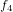
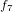

高速フーリエ変換は離散フーリエ変換の計算量を削減するアルゴリズムです。FFTの導出には、以下のように指数関数の部分を として簡略表記します。
この指数関数を行列として表記する場合は として記述します。
離散フーリエ変換で検証したN=4のケースを行列にすると以下の行列に指数関数部分をまとめることができます。
同様にN=8の場合は以下のように表せます。
このN=4、N=8からFFTの基本アルゴリズムの導出が可能となります。まずN=8ののパターンと、N=4のが類似している部分を探します。
類似点は、, , , , , , , の並びを、, , , , , , , に入れ替えると明らかになります。
並び替え後の行列は以下のように変わります。
この式を入念に観察すると行列の左上部分が4x4の行列を構成し、N=4のケースと合致します。同様に左下の4x4の部分は、N=4のを構成します。
Dはと対角行列ですが、N＝4のと乗じることで、右上の4x4行列、右下の4x4行列を再現できます。
Cooley–Tukey型アルゴリズムは、派生アルゴリズムが多数あります。その中で最も使用頻度が高いとされるのが、Radix-2 FFTです。
Radix-2 FFTの導出は以下の式で表すことができます。
(1) DFT（離散フーリエ変換）の式を、偶数（Even）と奇数（Odd）の2つに分割します。
(2) 奇数の項をさらに分割して、指数関数部分（）を取り出します。
(3) 偶数項の周期がN/2であることを示します。
(4) 奇数項の周期がN/2であることを示します。
(5) N/2を境にしてFの値が変動することを示します。
(6) (5)の上辺からFの導出となります。
(7) (3)、(4)と(5)の下辺から、t+N/2のFの導出となります。
上記の結果を一般化して、アルゴリズムとして表すと以下の擬似コードに一般化することができます。
Cooley-Tukey型アルゴリズムは、nの2乗からO(n log2 n)に計算量を削減することが可能です。
CPUを使用した古典的アルゴリズムは再帰的に処理を行いますが、以下のようなパラメーターと戻り値を持ちます。
offsetは再帰時の各位置となります。例えば以下のように再帰処理で高速フーリエ変換を行う関数の各ステップ（又はステージ）の処理を一般化してみましょう。
FFT(f, N, offset)
Nが1の場合は = とします。初回は入力にfの全配列、以降の再帰ツリーの走査は、アルゴリズムの各ステップ（ステージ）では前に出力したFを入力値として使います。
(2)と(3)で、部分列を1/2に分割していき、最終的には、N＝2まで再帰するものとします。
この一連の再帰処理については「図：FFT整列ネットワーク（N=8）」（Figure 19.1, “図：FFT整列ネットワーク（N=8）”）を参照ください。
図では、stage0はN=2、stage1はN=4、stage2はN=8の周波数成分というように前のステージで計算した結果を、次のステージでは倍の規模のFFTの入力に使うことができます。CPU処理で一般的な再帰を使う場合は、stage2→stage1→stage0という順序で呼び出しますが、実際の「処理順序」はstage0→stage1→stage2となります。
stage0の入力は観測値[,,…,]としますが、図のように上半分に偶数の添字、下半分に奇数の添字となるよう再配置します。
この再配置は奇数と偶数をスワップするだけですが、ビット反転を使うことで、容易に実装することができます。
ビット反転（bit reversal）は、Cooley-Tukey型アルゴリズムにおける偶数項と、奇数項の分離のために使うことができます。
例えば整数の「3」のビット反転をする場合は3を2進数にまず変換します。
00000000000000000000000000000011
これをビット反転すると以下のような2進数の列に変換されます。
11000000000000000000000000000000
ビットの反転は、このように対応する位置にあるビットをスワップ（入れ替え）します。「3」の例で言えば、1桁目と32桁目のビットを交換したことになります。
ではビット反転の実装を考えてみます。
def reverse_bit(x, stage):
b = 0
bits = stage
while bits != 0: #(1)
b <<= 1 #(2)
b |= (x & 1) #(3)
x >>= 1 #(4)
bits >>= 1 #(5)
return bbits変数が0になるまで繰り返します。 | |
b変数を左に一桁分シフトします。 | |
引数xの1桁目の値をb変数にコピーします。 | |
引数xを左シフトします。 | |
bitsを右シフトします。 |
シフト演算子は2進数の1/0のビットの読み込む順番を制御するために使います。引数xは右シフトすることにより、右側のビットから読み込み、変数xの右側にコピーしたビットは、左にシフトすることで、ビットを反転していきます。
最後に配列をビット反転した添字に基づいて並び変えてみます。
for i in range(2, size*2, 2):
rev = reverse_bit(np.uint32(i/2), size-1) * 2
if i < rev:
print("i: " + str(i / 2)+" rev:" + str(rev / 2))
tmpR = data[i]
tmpI = data[i+1]
data[i] = data[rev]
data[i+1] = data[rev+1]
data[rev] = tmpR
data[rev+1] = tmpIdata配列を並び変える際には、複素数の処理が入ります。添字iとrevを入れ替えるだけでなく、虚数部分の入れ替えも同時に行います。
Copyright 2018-2019, by Masaki Komatsu